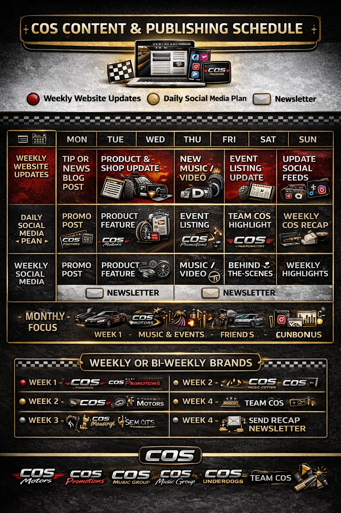

A full-blown multimedia content machine layout, designed like a pit crew schedule for a media empire.
It combines website updates, social media content, newsletters, brand rotation, and monthly themes in
one gold-trimmed, racing-themed calendar. It is not a plan. It is a statement of dominance.

Image: COS Content and Publishing Schedule - Weekly Master Plan.
Visual Summary
This schedule is a content battle plan disguised as a shiny infographic from the future. It is loud,
loaded, and structured to scream: "We have a strategy, and it is not just posting memes."
Header - COS Content and Publishing Schedule
Decorative banner with a laptop, tablet, and mobile phone all showing COS branding.
Legend icons: red dot for weekly website updates, yellow dot for daily social media, envelope for newsletter.
Sets the tone: updates are scheduled, systematic, and cross-platform.
Weekly Breakdown Grid (Top Half)
Row 1 - Weekly Website Updates
Mon: Tip or news blog post
Tue: Product and shop update
Thu: New music and video
Fri: Event listing update
Sun: Social feed updates
Days with major updates have red backgrounds.
Row 2 - Daily Social Media Plan
Mon: Promo post (COS Products)
Tue: Product feature (COS Motors)
Thu: Event listing (COS Promotions)
Fri: Team COS highlight
Sun: Weekly COS recap
This row is the daily brand presence engine.
Row 3 - Weekly Social Media
Promo
Product feature
Music and video
Behind-the-scenes
Weekly highlights
Simplified strategy overview for the week.
Newsletter Icons
Appear under Tuesday and Thursday.
Represent delivery windows for newsletters.
Shaped like envelopes, because even COS respects the inbox.
Monthly Focus (Bottom Strip)
Week 1 - COS Motors and cars
Week 2 - Music and events
Week 3 - Friends (networking and partner features)
Week 4 - Cunbonus (assumed bonus week)
Weekly and Bi-Weekly Brand Schedule (Bottom Grid)
Divides COS brands across four weeks using the colored dot system.
Week 1: COS Motors, COS Promotions
Week 2: COS Promotions, COS Motors, COS Music Cutter
Week 3: COS Underdogs, Sin City Movement
Week 4: Team COS, recap newsletter
What This Image Communicates
COS does not just create content - they deploy it with precision.
Every day has a mission, every week has a focus, every brand has a lane.
Planned for every platform: blog, social, video, shop, and newsletters.
This is not a vibe. This is a calendar of conquest.
Bonus Notes
Style is aggressively branded with carbon fiber textures and golden UI elements.
Feels like a Fast and Furious franchise got a content strategist.
Layout is usable and could be built into Airtable, Notion, or a CMS scheduler.